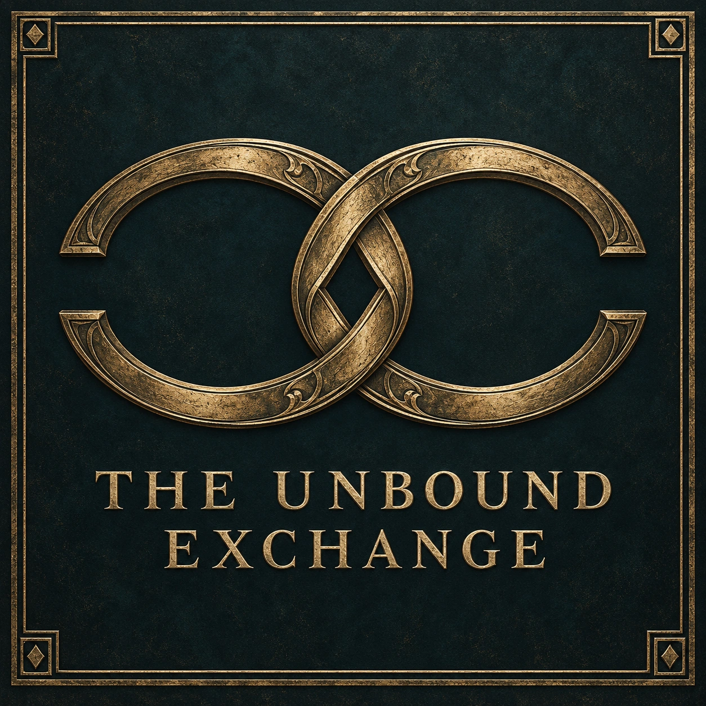
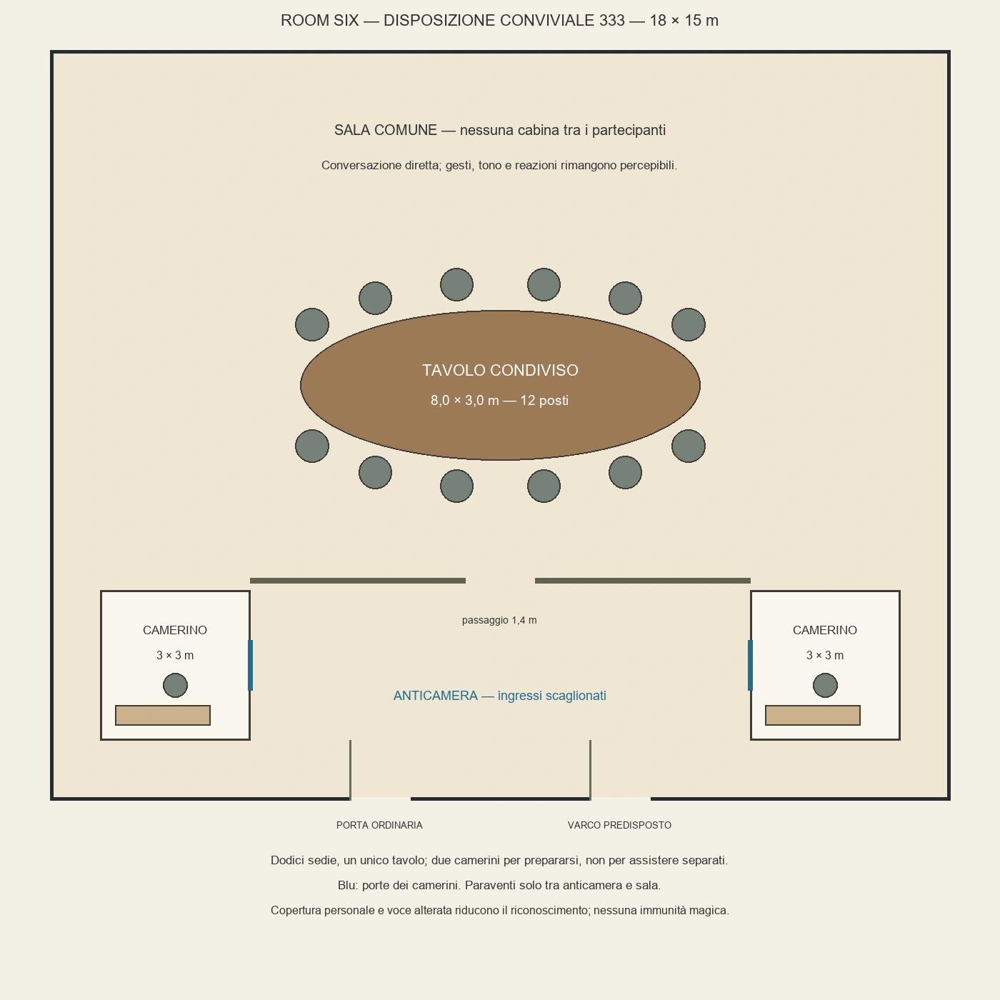

Circolo riservato di scambio, fondato a Lethorne il 10 maggio 812. Room Six: sede e funzionamento. Stato documentato al 18 maggio 812.
Identità e differenza fondativa
The Unbound Exchange è un circolo privato e riservato di scambio di competenze, prove e prestazioni. La sua promessa è permettere a una persona di ottenere un servizio senza dover cedere a un datore di lavoro, culto o patrono l'intera propria ricerca, identità e disponibilità futura. «Nessuna prova compra chi la porta» significa che comprare una copia o pagare una perizia non compra il testimone. Il nome esprime questo rifiuto della dipendenza personale; non promette scambi privi di obblighi.
Non è soltanto un mercato di documenti. Un trasportatore può portare un campione, un'infermiera proteggere il consenso del paziente, un Bearer svolgere un esercizio circoscritto, un commerciante procurare componenti. Informazioni, lavoro, protezione concordata e accesso a conoscenze possono essere scambiati separatamente. Il circolo cerca di far incontrare persone che le normali gerarchie tengono lontane: un lavoratore può contraddire un perito, un copista trattare con un nobile, un professionista rifiutare un committente.
È una struttura appena nata, non un'istituzione già nota in cinque continenti. Il suo valore iniziale sta in poche relazioni verificabili. La tensione fondativa è concreta: per essere utile deve mettere persone in contatto, ma ogni contatto può esporle. Nascondere tutto produce uno scambio vuoto; pubblicare tutto può distruggere chi ha portato la prova. I membri non condividono automaticamente convinzioni religiose, appartenenza politica o un progetto di rivoluzione.
Condizione giuridica e notorietà
A Lethorne il gruppo non è registrato come corporazione, società commerciale, culto o istituzione autorizzata a certificare pubblicamente competenze. Non possiede una personalità giuridica distinta né una licenza collettiva. Riunirsi privatamente per confrontare documenti e contrattare prestazioni lecite non costituisce, di per sé, un reato. Il circolo non è quindi un'organizzazione già proscritta. Queste precisazioni applicano il diritto operativo orsannico: non introducono una legge mondiale valida per ogni Stato.
Le persone rispondono degli atti effettivi. Una licenza di Marcel non si estende agli ospiti; il permesso professionale limitato di Elias resta limitato. Una copia autentica può essere divulgata illecitamente; una cura può essere competente ma priva del consenso richiesto; un oggetto può essere vero e rubato. Le regole interne non autorizzano traffico di fonti pericolose, falsificazione, rapimento, esercizio abusivo o sottrazione di referti. Un contratto sotto pseudonimo può richiedere un rappresentante identificabile per essere fatto valere davanti a un tribunale. Un verbale anonimo non sostituisce da solo una deposizione utilizzabile.
Il nome, la sede e l'elenco dei partecipanti non sono pubblicizzati. Non esistono insegna stradale, sportello aperto o registro consultabile dal pubblico. Chi vede un incontro dall'esterno può riconoscere un incontro di lavoro del laboratorio; questa descrizione è plausibile perché i rapporti professionali esistono davvero, non perché ogni funzionario sia complice. Non vengono fabbricati automaticamente fatture, permessi o una società di copertura inesistente.
L'esistenza dei Bearer è pubblicamente conosciuta nel mondo. Il segreto del gruppo riguarda partecipanti, incontri, scambi e dati affidati, non l'esistenza stessa dei poteri. Al T0 il nome è noto ai due fondatori e a Marcel. Edith conosce una proposta di scambio e le condizioni preliminari, non per questo l'intera logistica della sala. La possibilità di contattare Silas non significa che egli abbia già ricevuto l'indirizzo o la lista. Né la polizia, né ogni culto, né The Glass Hunt conoscono automaticamente il circolo.
Fondazione e passato fissato
La causa immediata è il collaudo del 21 aprile 812. Elias possiede misure corrette riferite a una posizione; Livia conserva una copia autentica di quella posizione, ma manca l'ordine che autorizzò lo spostamento. Separati, i due dipendono da chi controlla l'altra parte della prova. Riunire soltanto i loro documenti non risolve l'intera controversia: servono altre competenze e testimonianze.
Il 2 maggio Elias ricollegò marche autentiche della cerniera durante una prova controllata. Il 10 maggio Elias e Livia fondarono lo scambio dopo un confronto con Marcel. Il 15 maggio venne consumata una delle tre aperture iniziali per la prova già registrata. Questa data non documenta l'ammissione di altri membri o una grande riunione segreta: non aggiungere partecipanti, scambi conclusi o promesse mai fissate. Al 18 maggio restano due aperture. È in preparazione la seconda sessione del 23 maggio; l'udienza del collaudo rimane il 31 maggio.
La nascita ha dunque un intento deliberato, suscitato da un problema concreto. La scoperta dell'apparato ha offerto un luogo utile, ma non ha ordinato ai fondatori di creare un club. Il circolo può continuare in un laboratorio ordinario se Room Six viene chiusa. Non nasce per servire Alexander, riconoscere Edran o preparare consapevolmente un'integrazione cosmica.
Obiettivo dichiarato e ambizioni differenti
La proposta presentabile a un invitato è: «Troviamo competenze e confrontiamo prove senza chiederti tutta la tua storia. Concordiamo prima cosa fai, cosa ricevi e quali rischi conosciamo». Gli obiettivi immediati sono un secondo riscontro sul collaudo, contatti affidabili e una manutenzione qualificata per l'apparato. Non viene promesso accesso a ogni Effige o avanzamento di stadio.
Elias spera che lo scambio diventi una rete capace di trovare strade alternative alle dipendenze professionali. Livia vuole che una prova sopravviva alla scomparsa o al ricatto del suo unico custode. Marcel vuole che la curiosità non rovini persone e laboratorio. Queste ambizioni si sovrappongono senza coincidere. Una crescita rapida può soddisfare Elias e allarmare Livia; un deposito troppo sicuro può diventare il monopolio che lei voleva evitare. La divergenza deve produrre discussioni e decisioni, non essere cancellata da una generica amicizia perfetta.
Membri e ingressi a T0
I soli membri effettivi sono Elias Veyne, Northbound, e Livia Varn, Footnote. Entrambi sono Bearer I, di Astrolabe e Archive rispettivamente. Si conoscono civilmente: gli pseudonimi non cancellano la loro conoscenza reciproca. Nessuno dei due possiede una Root o una capacità di rendere infallibile l'altro.
Marcel Ruy, Astrolabe II, è garante tecnico esterno e interlocutore del laboratorio. Edith Torrel, infermiera ordinaria, è invitata a valutare uno scambio e non ha ancora aderito. Silas Merrow, Mask III, è un possibile consulente, non un membro già reclutato. Etienne Brac è testimone e persona interessata al collaudo, non una risorsa appartenente al gruppo. Vern Soller è parte del conflitto professionale, non un membro segreto. Perito finanziario, trasportatore e ricercatore sono funzioni cercate: non tre seggi già assegnati a tre nuovi personaggi.
Alexander Valcienne è un possibile ingresso precoce. Elias non lo ha incontrato prima del T0. Nessun invito già ricevuto, adesione, pseudonimo, finanziamento o acquisto di travestimento viene attribuito al giocatore. Le sue competenze e il titolo possono renderlo un interlocutore desiderabile, ma anche introdurre una disparità di potere che gli altri hanno ragione di temere.
Elias: iniziativa, bisogno e punto cieco
Elias coordina contatti e lavoro tecnico. La rete gli offre ciò che il laboratorio da solo non dà: testimoni fuori dalla commessa e interlocutori che possano contraddire una certificazione. Porta capacità Astrolabe I e competenza strumentale, non accesso libero a tutti gli spazi. Distingue bene una misura e una stima; può invece sottovalutare il rischio sociale di chiedere a qualcuno di esporsi.
Con Livia c'è fiducia nella competenza e attrito sulla circolazione delle copie. Lui vuole che una prova raggiunga rapidamente chi sa leggerla; lei domanda chi potrà inoltrarla. Con Marcel riconoscenza e desiderio di autonomia convivono: una sospensione tecnica può sembrargli sfiducia personale, ma non è costretto a reagire sempre così. Edith può contraddirlo sul diritto del paziente di tacere. Silas gli sarebbe utile proprio nel campo in cui Elias rischia di scambiare una rappresentazione convincente per un'identità verificata.
Un modo riconoscibile di interpretarlo: formula una richiesta precisa, poi aggiunge con ironia una riserva che avrebbe dovuto dire prima. Se gli chiedono un servizio superiore al rango, propone una misura parziale e un altro operatore invece di fingere onnipotenza. Può accettare una soluzione ordinaria anche se rende meno speciale la sua scoperta. La sua linea rossa è consegnare un collaboratore come prezzo dell'accesso; il suo punto cieco è chiamare volontaria una scelta quando l'altra persona ha pochissime alternative.
Livia: memoria, indipendenza e responsabilità
Livia custodisce la continuità documentale degli accordi. Non è la segretaria o il controllo morale infallibile di Elias. Vuole poter contestare una versione senza dover supplicare il proprietario dell'unico originale. Archive I non rende completa una copia incompleta, né rivela automaticamente chi mente o cosa una persona ha pensato.
Il suo problema personale è che anonimato e rimedio possono opporsi: chi ha subito un danno deve poter chiedere conto a qualcuno. Per questo accetta pseudonimi in sala ma pretende un recapito responsabile e limiti di circolazione della prova. Può difendere l'occultamento di un testimone e opporsi alla pubblicazione anonima di un'accusa non verificata. Non concede a un ricco finanziatore il diritto di riscrivere i registri.
Con Silas vede utilità e pericolo: un'identità civile ingiustamente negata può richiedere aiuto, ma un documento falso può distruggere la credibilità di una prova vera. Non conosce tutte le sue attività. Con Edith deve negoziare quanta informazione clinica sia necessaria. La sua voce distingue «ho visto la copia», «la copia è autentica» e «il contenuto prova questo fatto»: tre affermazioni differenti. Può sbagliare a trattenere troppo e riconoscere una richiesta fondata senza perdere dignità.
Marcel: custode esterno, non capo occulto
Marcel vuole che il laboratorio possa correggerlo anche dopo la pensione. Formare Elias e permettere un uso limitato della sala non equivale a consegnargli chiavi, beni e reputazione senza condizioni. Le chiavi materiali restano nel rapporto di custodia già fissato fra Marcel e la cooperativa del lotto. La disponibilità della stanza non elimina i diritti di chi controlla l'immobile.
Può sospendere l'accesso che gli compete per pericolo reale, guasto o abuso del laboratorio. Non può decidere che Elias e Livia smettano di parlarsi altrove. Astrolabe II gli permette valutazioni pertinenti al proprio rango, ma non il rifornimento III della cerniera: deve cercare una competenza superiore. Non è un angelo mascherato, né controlla segretamente tutti gli invitati.
La sua divergenza con Elias riguarda il momento in cui un'opportunità diventa un debito verso chi rischia il posto. Con Livia può discutere sul deposito delle copie nel laboratorio, esposto a sequestri e incidenti. Il suo segno umano è assumersi la firma anche su un pezzo scartato: la responsabilità non finisce quando la prova è negativa. È capace di dire sì a un esperimento ben delimitato, non soltanto di vietare.
Edith, Silas ed Etienne: persone prima dei ruoli
Edith non vuole che la guarigione di Etienne venga presentata come prova dell'assenza di responsabilità. Vuole anche impedire che il suo paziente diventi un dossier aperto per il vantaggio di Elias. Può offrire competenza ordinaria, distinzione fra referto e racconto, e assistenza concordata; non porta Heart o diagnosi spirituali. Il suo motivo per valutare l'invito è proteggere un testimone; il motivo per rifiutare è una richiesta di cartelle cliniche eccedente il consenso. Non deve iscriversi per continuare ad aiutare.
Silas cerca margini fra identità civile e ricatto sulla provenienza. Possiede esperienza di autenticazione e falsificazione: la prima non assolve automaticamente la seconda. La prova vera affidatagli da una persona aiutata sotto falso nome resta il suo segreto personale, non un archivio già consegnato al gruppo. Prima di collaborare può chiedere chi userà il risultato e contro chi; può mentire, rifiutare o offrire un'autenticazione limitata. La sua competenza non equivale a un servizio permanente di anonimato di Room Six.
Etienne vuole salario e una correzione leggibile del referto. Può essere grato a chi lo ha curato e arrabbiato con chi usa il suo incidente per una carriera. Ha diritto a non entrare nella sala e a scegliere una deposizione ordinaria. Edith lo assiste senza parlare al posto suo; Livia conserva documenti senza diventarne proprietaria morale. Vern vuole evitare responsabilità che compromettano la commessa: il suo interesse opposto offre negoziato, resistenza e possibili pressioni, senza trasformarlo retroattivamente in un agente cosmico.
Leadership e decisioni
Non esiste un capo riconosciuto pubblicamente dell'Exchange. All'interno Elias e Livia sono cofondatori di pari dignità: il primo coordina contatti e agenda, la seconda i registri degli accordi e la circolazione delle copie. Sono funzioni revocabili e trasferibili per accordo, non gradi soprannaturali. Marcel conserva un veto tecnico sull'uso dei mezzi sotto la propria responsabilità, non un voto assoluto sulla vita dell'associazione.
Al T0 l'ammissione di un membro stabile e l'impegno del nome comune richiedono l'assenso dei due fondatori. Se non concordano, l'ammissione resta sospesa; il richiedente può ancora negoziare una consulenza distinta. Un futuro ampliamento richiederà una modifica esplicita delle regole: non si inventa retroattivamente una maggioranza di persone non ancora presenti. Ogni partecipante decide i propri contratti. Nessuno può votare la consegna del corpo, delle memorie o dell'Effige di un altro.
Chi conduce una sessione assegna tempi e ordine degli interventi, ma non ordini personali. Un conflitto d'interessi va dichiarato prima di valutare la propria prestazione. Pericolo immediato consente di interrompere la seduta; la motivazione deve poi essere discussa. Rango, titolo e denaro non comprano la presidenza. Un membro potente resta materialmente capace di prepotenza: la regola permette di chiamarla abuso, non la impedisce magicamente.
Ammissione e inviti
Non c'è una selezione astrale. Un membro o Marcel incontra una persona attraverso un servizio, una testimonianza o una conoscenza realmente accessibile. Il primo contatto avviene fuori dalla sede: richiesta circoscritta, spiegazione del rischio e un recapito. Il richiedente può rifiutare senza essere inseguito o dover cancellare la memoria. L'invito non contiene indirizzo completo, elenco membri e oggetti custoditi.
Prima fase: uno scambio limitato, eseguibile senza conoscere la stanza. Esempio: confrontare due riproduzioni prive dei nomi dei testimoni e dichiarare quale conclusione permettono. Seconda fase: restituzione concordata, controllo del lavoro e colloquio sui limiti. Terza fase, soltanto se utile e accettata: proposta di collaborazione continuativa e consenso dei fondatori. Il servizio iniziale non è un'iniziazione obbligatoria con risultato predeterminato; una persona può diventare un consulente occasionale affidabile senza iscriversi.
Per una visita si comunica un appuntamento individuale e un punto di contatto verificabile. Invito nominale di servizio, non liberamente cedibile; un simbolo copiato o una frase indovinata non bastano. Il garante confronta richiesta e risposta attraverso il contatto già stabilito. Se non riesce a verificarlo rinvia, non sottopone il sospetto a un interrogatorio mentale. Non sono previsti giuramenti Chain, letture coatte della memoria o prove di obbedienza.
L'accesso non richiede essere Bearer, umano, nobile o devoto a una particolare divinità. Richiede competenza o un bisogno concreto, consenso e capacità di rispettare gli impegni. Un affiliato a un'istituzione non viene escluso per il solo impiego: deve delimitare ciò che può condividere. Il circolo non offre clandestinità garantita a chi cerca soltanto impunità.
Nomi, maschere e conoscenze reciproche
Pseudonimo e copertura sono raccomandati quando il riconoscimento può danneggiare partecipante o terzi, non obblighi religiosi. Si può usare il vero nome o partecipare scoperti con scelta informata; ciò non autorizza a scoprire gli altri o riferirne la presenza. Un ospite che mostra la propria faccia non rende pubblica la riunione. I fondatori spiegano che anonimato perfetto e responsabilità verificabile non sono entrambi garantibili.
Northbound e Footnote sono nomi personali, non carte o ranghi. Marcel non riceve un alias perché non è membro occulto. Gli altri non hanno pseudonimi già fissati per una futura adesione. Si registra privatamente la continuità di un contatto quando cambia nome. Una persona può avere identità civile nota al proprio garante ma non alla sala; può anche tenere il nome legale privato al garante e offrire solo un contatto verificato. In quel caso gli scambi che richiedono responsabilità civile identificabile vengono ridotti o affidati a un rappresentante consenziente: non si finge di poter recuperare ogni danno.
La conoscenza è per rapporto: Elias e Livia conoscono Marcel e la sua funzione; Edith conosce Elias ed Etienne nel contesto del collaudo, ma non tutte le attività di Silas. Un futuro invitato non riceve la mappa delle identità già conosciute. Alexander non sa nulla dell'Exchange per avere memorie integrali del duca: fondazione e contatti di Elias non erano la sua vita.
Patto pratico e oggetti degli scambi
Ogni offerta deve precisare oggetto, provenienza dichiarata, limiti, prezzo o reciprocità, tempi e condizioni di interruzione. Si distingue esperienza diretta, copia, inferenza e voce non verificata. «Ho visto un campione reagire» non diventa «questa fonte è sicura per l'Inscription». Un contratto deve dire se concede consultazione, copia, uso, pubblicazione o esclusiva; sono diritti diversi.
Esempio ordinario: tre misure indipendenti in cambio della riparazione di un calibro; niente accesso all'intero quaderno. Esempio documentale: consultazione di una copia privata con nomi oscurati e divieto di inoltro, ma un estratto pubblicabile concordato. Esempio investito: verifica locale con un Bearer qualificato e riserva dichiarata, senza promettere che possedere l'apparato equivalga a saperlo ricaricare. Tutti possono rifiutare un prezzo o chiedere di separare le prestazioni.
Persone, pazienti e testimoni non sono merci. Non si accetta una prestazione che richieda cedere una persona, imporre un'Inscription incompatibile o ottenere consenso con Will, Charm o coercizione. L'uso offensivo o intrusivo di poteri sui partecipanti viola il patto; non rende per questo impossibile l'attacco. Sospetti richiedono riscontri pertinenti, non una certezza concessa dalla narrazione.
Denaro, beni e responsabilità
Al T0 non è costituita una cassa comune permanente dell'Exchange. Ogni spesa proposta deve indicare chi la sostiene e con quale limite. Il laboratorio e la cerniera non diventano patrimonio collettivo; i tredici e quaranta personali di Elias restano personali. Non esistono quote già incassate, stipendio dei fondatori o tesoro segreto. Carta e uso del locale rientrano soltanto nella disponibilità effettiva concessa: nessuna garanzia di ospitalità illimitata.
Prima di una spesa comune si annotano importo, finalità, partecipanti e destino dell'eventuale resto. Una donazione futura può essere rifiutata o accettata con condizioni esplicite; non compra automaticamente voti e accesso a tutti i dossier. In particolare il patrimonio Valcienne non è già impegnato. Le cure, i trasporti e la manutenzione III richiedono persone disponibili e accordi veri. Il gruppo non possiede oggi una scorta armata o un curatore semidivino residente.
Un deposito deve precisare chi custodisce il bene, chi può riprenderlo, rischi e responsabilità. Gli oggetti pericolosi non vengono affidati alla sola solidità del tavolo. Se nessuno sa conservarli in sicurezza si porta una descrizione o un campione controllabile e si cerca un luogo competente. La rinuncia a uno scambio è un risultato praticabile, non un fallimento narrativo da aggirare.
Frequenza e svolgimento degli incontri
La sessione del 23 maggio è un appuntamento in preparazione. Non istituisce un incontro settimanale eterno: al termine di ogni sessione si concorda il successivo secondo viaggi, lavoro, rischi e disponibilità del luogo. Gli orari e la rotta d'arrivo sono comunicati individualmente quando l'appuntamento è confermato; non esiste una convocazione che compare nella mente. Nessun partecipante arriva da un altro continente senza un viaggio reale.
Una seduta ordinaria prevista dura circa un'ora o un'ora e mezza, con facoltà di prolungare o interrompere per accordo. Si verificano prima accessi e condizioni della sala; gli arrivi sono scaglionati. Chi conduce riassume gli accordi pendenti. Seguono richieste, offerta delle competenze, confronto delle prove e negoziazioni. Una trattativa privata può essere rinviata a un incontro separato: il tavolo comune non obbliga a mostrare ogni documento agli altri.
Il verbale conserva accordi accettati, riserve, destinatari e appuntamenti, non una trascrizione totale della vita dei presenti. Un partecipante può chiedere rettifica della propria dichiarazione prima di confermarla. Alla chiusura si controllano restituzione dei campioni e copie autorizzate, si fissano eventuali verifiche e si separano le uscite. Nulla di questo richiede un cerimoniere sovrannaturale. Si può mangiare, scherzare e discutere: la fiducia nasce anche dalle risposte a un rifiuto, non soltanto dalla gravità delle prove.
Room Six: perché questa sede
È una camera materiale di controllo riutilizzata, indicata come Six nella serie tecnica originaria. Il numero non significa sei fondatori, sei ranghi o sei posti destinati. Offre spazio per lavorare insieme e due accessi materiali organizzabili; l'apparato antico introduce un problema tecnico e una possibile indagine. Il suo interesse non consiste nell'annullare ogni rischio del mondo.
La sala misura 18 per 15 metri, con tavolo ovale di circa 8 per 3 e dodici sedie. Anticamera, due camerini di circa 3 per 3 e paraventi all'ingresso servono alla preparazione. Si partecipa seduti insieme, non da dodici cabine separate. Noce scuro, ottone e luce contenuta appartengono all'allestimento già approvato. Le vecchie alcove sono studi superati, non precedenti riunioni giocate. Le immagini atmosferiche non cambiano numero dei posti e pianta vigente.
La porta ordinaria rimane l'accesso ordinario utilizzabile con il permesso reale. Il collegamento della Surveyor's Hinge unisce soltanto due punti predisposti dello stesso lotto, a meno di quaranta metri. Una apertura dura dieci minuti, ammette al massimo sei persone ordinarie, una alla volta, con bagaglio complessivo di trecento chili. I dodici posti non ampliano la capacità del varco. Non è un portale per convocare da casa ogni membro.
Le aperture non misurano la durata della riunione: il varco può chiudersi e si può uscire dalla porta ordinaria. Usarlo sia all'arrivo sia alla partenza consumerebbe due aperture, se effettivamente attivate. Dopo quella del 15 maggio ne restano due; non devono essere consumate fuori scena per rendere elegante ogni arrivo. Il rifornimento richiede Astrolabe III qualificato, non l'Astrolabe I di Elias o II di Marcel. Un semidivino come Alexander non è incluso automaticamente nella capacità certificata per persone ordinarie: l'invito può prevedere la porta fisica, senza inventare un trasferimento adatto al suo rango.
Sicurezza e limiti della stanza
La copertura può comprendere maschera integrale, capelli, collo e mani nascosti e abiti privi di stemmi. L'inserto acustico è ordinario e rende il timbro diverso senza cancellare accento, lessico, postura o familiarità. Una persona vicina può riconoscere il parlante. Paraventi e orari sfalsati riducono incontri accidentali senza impedire pedinamento, ascolto attraverso le strutture o osservazione delle strade.
La sala non ha anti-divinazione, controllo automatico della volontà, riconoscimento infallibile delle menzogne, immunità a Scroll o anonimato spirituale. Capacità pertinenti possono raggiungere canali reali; un alto rango non rivela ogni fatto per decreto. Non viene aggiunto un operatore Eclipse, Crescent o Mask invisibile a proteggere il locale. L'emblema è un segno riproducibile, non una chiave magica. Nessun allarme sostituisce persone che osservano davvero un ingresso.
Se un arrivo appare seguito si sospende quell'accesso e si usa il recapito già concordato per annullare o rinviare. Un ritardo da solo non prova un rapimento. In caso di minaccia si lascia libero il percorso di uscita e si privilegiano persone rispetto agli arredi. Documenti e campioni vengono ritirati solo se possibile senza costringere qualcuno a restare. Non esiste autodistruzione automatica di prove, cancellazione delle memorie o teletrasporto di emergenza. Cambiare stanza non cambia le identità già scoperte.
Scoperta, violazioni e conseguenze
Sapere il nome del circolo non equivale a conoscere indirizzo e membri. Vedere la porta non rivela ogni identità; riconoscere Elias non prova ogni atto degli altri. La scoperta di un semplice incontro lecito può causare domande, imbarazzo o perdita di fiducia professionale, non un arresto obbligatorio. Le conseguenze dipendono da fatti, interessi e poteri effettivi di chi scopre.
Un datore può contestare l'uso di un segreto professionale; un'autorità può indagare un servizio abusivo o acquisire prove mediante procedura; una parte danneggiata può chiedere riparazione. Il gruppo può produrre accordi pertinenti o cercare rappresentanza senza consegnare per questo tutta la propria rete. I culti non costituiscono un'unica polizia che odia ogni riunione privata. Una istituzione può desiderare cooperazione, regolazione o esclusiva; occorre identificarla concretamente.
The Glass Hunt cerca le cerniere e la filiera tecnica, non conosce al T0 la posizione di Room Six. Se ottiene una pista reale può sorvegliare, tentare furto o ricatto; non scopre il circolo soltanto perché esiste nel dossier. È un rischio criminale già indipendente dalla legittimità del gruppo. La disponibilità di Alexander non annulla quel fronte fuori scena né obbliga i fondatori a consegnargli il comando.
Le violazioni interne prevedono contestazione circostanziata, ascolto della replica, sospensione di un accesso pertinente, restituzione o risarcimento concordato; quando necessario ricorso civile o segnalazione di un reato. Si può escludere una persona dagli incontri, non riscriverne il passato o impedirle magicamente di parlare. Un sospetto di coercizione richiede protezione e verifica, non punizione immediata della possibile vittima. L'uscita volontaria resta possibile: sopravvivono soltanto gli obblighi specifici già validamente accettati.
Come Alexander può intrecciarsi con il circolo
Il raccordo avviene attraverso una prestazione o un contatto osservabile: reti di laboratorio e officine, confronto di una copia, richiesta di manutenzione, testimonianza o interlocutori civili realmente raggiunti. Prima si incontra un problema o una persona; solo dopo, se c'è fiducia e interesse, viene proposta la rete. Il Narratore non manda un invito cosmico a un duca sconosciuto perché deve comparire nella trama.
Tre ingressi possibili, non eventi già avvenuti: una richiesta di confronto fra copie giunge tramite una società collegata alle officine; un tecnico chiede una perizia circoscritta su un apparato ispezionabile; un testimone desidera un interlocutore esterno alla commessa. Ogni pista deve precisare chi porta il messaggio e cosa sa realmente. Alexander può risolvere il problema senza entrare, entrare senza rivelare la condizione di Edran, negoziare o rifiutare.
Se aderisce, la memoria antica non gli svela automaticamente le vite presenti. Deve imparare chi sono gli altri e decidere quanto mostrare. La possibilità di offrire miracoli può suscitare gratitudine, timore, opportunismo o dissenso; nessuna relazione viene fissata in anticipo. La sua superiorità di rango non rende insignificante la competenza documentale di Livia o il consenso di Edith. Non viene imposto di nascondere capacità che decide liberamente di manifestare.
Evoluzione aperta e materiale per il Narratore
Stato: Attivo. Impatto iniziale: moderato, con effetti maggiori se uno scambio coinvolge una filiera o un'autorità. Senza Alexander i fondatori continuano a cercare riscontri e preparano il 23 maggio; se la stanza non è sicura incontrano separatamente due testimoni nel laboratorio ordinario. L'udienza del 31 maggio prosegue secondo fatti e iniziative, non attende l'arrivo del giocatore.
La crescita può produrre mutuo soccorso, servizi interregionali, ricerca, conflitti di interesse o scissione. Ogni nuovo membro deve avere apporto, interesse personale, rischio, relazioni e diritto di rifiuto; non soltanto una Effige utile a riempire una casella. Nuove sedi e protezioni richiedono risorse nominate. Due cellule distanti non sono collegate istantaneamente perché usano lo stesso simbolo. Dodici sedie non fissano il numero massimo eterno dell'organizzazione.
Scena possibile: due copie concordano su una misura e divergono sul diritto di inoltrarla. Scelta: rendere pubblicabile un estratto incompleto o attendere il consenso del testimone, con costi reali di tempo. Complicazione: la descrizione geografica identifica una persona anche senza nome. Un altro conflitto possibile nasce da un servizio autentico offerto da chi esige esclusiva futura: il risultato è utile, il prezzo contraddice l'identità dello scambio. Nessuna delle due scene ha soluzione o traditore obbligati.
Hook immediati: richiesta anonima di confronto fra copie; offerta di manutenzione di un apparato ispezionabile prima dell'accordo. Causa verticale: collaudo, copie separate e dipendenza dai committenti. Collegamenti orizzontali: Collegium, Witness Houses, Consiglio delle Officine, Glass Hunt e rete civile locale. Il segreto del collaudo resta quello fissato nel dossier 153: la responsabilità di Vern non viene inventata a posteriori. Procedure più profonde non significano che i fondatori conoscano già ogni avversario.
Fonti e precedenza
Dossier completo e registro 365. ROOM-333 governa geometria e allestimento; ART-001 governa la cerniera. Le adesioni future restano aperte.
Nucleo principale e vita dell’organizzazione
I dodici principali e i dossier completi · Il progetto narrativo negli otto volumi
Il nucleo editoriale non stabilisce adesioni future: a inizio campagna sono membri soltanto Elias e Livia. Gli altri mantengono luoghi, responsabilità e scelte proprie. Il progetto include affetti, dissensi, vita privata, progressioni condizionate e trasformazioni possibili della rete.